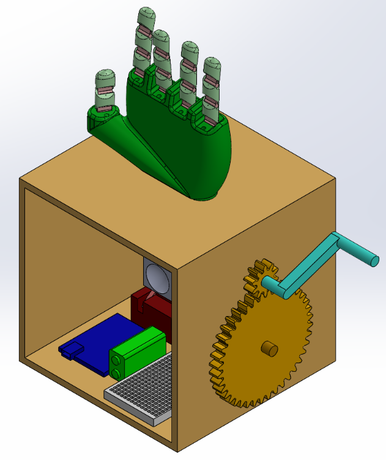

For my geometric modeling course, my team and I were tasked with creating
a "project for the elderly". After thorough brainstorming, we decided it would be a good challenge
to create a hand that could play "Rock, Paper, Scissors".
I proposed the idea of making it electromechanical, so I took the lead in
planning how to use servo motors, a CMU, DC-buck converter, etc., to make the hand motions by having the servos
pull strings at different angles that were connected to sets of fingers. See our slideshow presentation below
to see how it turned out!
We won the award for "Best Prototype" out of our lecture section against 20 other teams.
This was definitely one of the most fun and fulfilling projects I've worked on.
